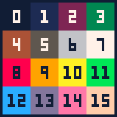
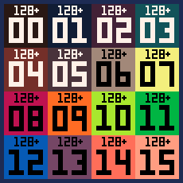

Pico-8 API Cheatsheet

- Audio
- Cart Data
- Coroutines
- Flow Control
- Graphics
- Input
- Map
- Math
- Memory
- Operators
- PICO-8
- Stat
- Strings
- P8SCII
- Lua
- Tables
- Keyboard Shortcuts
Version 0.2.3
Added config section.
More to come.
Commandline Arguments
-- Run Pico-8 from Terminal
pico-8 [switches] cart.p8
-splore -- boot in splore mode
-width n -- set the window width
-height n -- set the window height
-windowed n -- set windowed mode off (0) or on (1)
-frameless n -- run pico-8 in borderless window mode w/ (1); normally w/ (0)
-volume n -- set all audio volume [0..256]
-sound n -- set only sfx volume [0..256]
-music n -- set only music volume [0..256]
-joystick n -- joystick controls starts at player n (0..7)
-pixel_perfect n -- 1 for unfiltered screen stretching at integer scales
-preblit_scale n -- scale the display by n before blitting to screen
-draw_rect xywh -- absolute window coordinates and size to draw the p8 screen
-run cart -- load and run a cartridge
-x cart -- execute a PICO-8 cart headless and then quit (experimental!)
-export args -- run EXPORT command in headless mode and exit
-p args -- pass a parameter string to the specified cartridge
-home_path path -- set the path to store config.txt and other user data files
-root_path path -- set the path to store cartridge files
-desktop path -- set a location for screenshots and gifs to be saved
-gif_scale n -- scale of gif captures. default: 2 (256x256 pixels)
-gif_len n -- set the maximum gif length in seconds (1..120)
-gui_theme n -- use 1 for a grey, higher contrast editor color scheme (0: blue)
-timeout n -- how many seconds to wait for splore downloads timeout (d: 30)
-software_blit n -- use software blitting mode off (0) or on (1)
-screenshot_scale n -- scale of screenshots. default: 3 (368x368 pixels)
-foreground_sleep_ms n -- how many milliseconds to sleep between frames.
-background_sleep_ms n -- how many milliseconds to sleep between frames in bg
-accept_future n -- use (1) to allow loading cartridges made w/ newer P8 versions
-global_api n -- use (1) to leave api functions in global scope (debugging)
-show_fps n -- displays fps counter (1) on, (0) off
In 0.2.3, Pico-8 granted us more configuration options with the new config [option] function, allowing for interactive customization while Pico-8 is running.
Configuration
# sets the volume, minimum of 8, max of 256.
> config volume [8 - 256]
# set the theme of the pico-8 IDE. choices are
> config theme [auto, blue, classic]
# set the length of saved gifs. defaults to 8, max is 120.
> config gif_len [1 - 120]
# post-gif-recording behavior. 0: no reset, 1: reset
> config gif_reset_mode [0 - 1]
# gif scaling
> config gif_scale [1 - 8]
# screenshot scaling
> config screenshot_scale [1 - 8]
# splore filtering.
# when enabled, any carts marked mature will not be downloaded.
> config splore_filter [on, off]
# tab width size
> config tab_width [1 - 8]
PICO-8 Specs
- display: 128x128, fixed 16 colour palette
- input: 6 buttons
- cartridge size: 32k
- sound: 4 channel, 64 definable chip blerps
- code: lua, max 8192 tokens of code
- sprites: single bank of 128 8x8 sprites + 128 shared
- map: 128x32 8-bit cels + 128x32 shared
Audio Manipulation
music([n, [fade_len, [channel_mask]]]) -- play music; n = -1: stop
sfx(n, [channel, [offset]]) -- play sfx; n = -1: stop in channel; n = -2: release loop in channelCart Data Manipulation
cartdata(id) -- permanent data storage in slot [id]; once/execution
dget(idx) -- get number at index
dset(idx, val) -- set number at index to valueCoroutines::view coroutines thread
cocreate(f) -- returns a coroutine that executes f
coresume(c) -- resume coroutine c execution
costatus(c) -- returns true if c is still executing, false otherwise
yield() -- use inside a coroutine; makes a coroutine pause execution until next resumeExecution Flow
_draw() -- called once per visible frame
_init() -- called once on program startup
_update() -- called once per update at 30fps
_update60() -- called once per update at 60fpsFlow Control
::label:: -- label
goto label -- jump
if (<condition>) -- inline if
if <condition> then
-- if block
elseif <condition> then
-- elseif block
else
-- else block
end
while <condition> do
-- while block
end
repeat
-- repeat block
until <condition>
for <var> = <first>, <last>, <step> do
-- for block
end
for <var> in all(<table>) do
-- for block
end
for <key>, <value> in pairs(<table>) do
-- for block
endPALETTES


Graphics Manipulation
camera([x, y]) -- set camera position
circ(x, y, r, [col]) -- draw circle
circfill(x, y, r, [col]) -- draw filled circle
clip([x, y, w, h]) -- set screen clipping region
cls([col]) -- clear screen; col = clear color
color(col) -- set default color
cursor(x, y) -- set cursor and CR/LF margin position
fget(n, [f]) -- get values of sprite flags
fillp(mask) -- set fill pattern for circ, circfill, rect, rectfill, pset, and line
flip() -- flip screen back buffer (30fps)
fset(n, [f], v) -- set values of sprite flags
line(x0, y0, x1, y1, [col]) -- draw line
oval(x0, y0, x1, y1, [col]) -- draws an ellipse inside of a bounding rectangle
ovalfill(x0, y0, x1, y1, [col]) -- draws a colored ellipse
pal(c0, c1, [p]) -- swaps col 0 to col 1; p = 0 = draw palette; p = 1 = screen palette
palt(col, t) -- set transparency for colour to t (bool)
pget(x, y) -- get pixel colour
print(str, [x, y, [col]]) -- print string
pset(x, y, [col]) -- set pixel colour
rect(x0, y0, x1, y1, [col]) -- draw rectangle
rectfill(x0, y0, x1, y1, [col]) -- draw filled rectangle
sget(x, y) -- get spritesheet pixel colour
spr(n, x, y, [w, h], [flip_x], [flip_y]) -- draw sprite
sset(x, y, [col]) -- set spritesheet pixel colour
sspr(sx, sy, sw, sh, dx, dy, [dw, dh], [flip_x], [flip_y]) -- draw texture from spritesheet
-- Draws a textured line between two points, sampling the map for data
tline(x0, y0, x1, y1, mx, my, [mdx], [mdy])
fillp() mask
.-----------------------.
|32768|16384| 8192| 4096|
|-----|-----|-----|-----|
| 2048| 1024| 512 | 256 |
|-----|-----|-----|-----|
| 128 | 64 | 32 | 16 |
|-----|-----|-----|-----|
| 8 | 4 | 2 | 1 |
'-----------------------'
Input Functions
btn([i, [p]]) -- get button i state for player p
btnp([i, [p]]) -- true when the button was not pressed the last frame; delays 4 frames after button held for 15 framesInput::Custom Delays
-- Button check time delays; measured in frames @ 30FPS
-- The default values of 15 and 4 will be used if a value of 0 is given for delay
poke(0x5F5C, delay) -- sets the initial delay before repeating; 255 will turn off repeat completely
poke(0x5F5D, delay) -- sets the repeating delay.
Map Functions
map(cel_x, cel_y, sx, sy, cel_w, cel_h, [layer]) -- draw map; layers from flags; sprite 0 is empty
mget(x, y) -- get map value
mset(x, y, v) -- set map valueMap::Deprecated
-- Functions just like map(), but is no longer used.
mapdraw(cel_x, cel_y, sx, sy, cel_w, cel_h, [layer])Mathematical Functions
-- numeric representation range
-32768.0 .. 32767.99
abs(x) -- x absolute value
atan2(x, y) -- coordinate to angle; range [0..1]
cos(x) -- cosinus; range [0..1]
flr(x) -- round down
-flr(-x) -- not a function per se, but will work as ceil(x)
max(x, y) -- x/y maximum
mid(x, y, z) -- x/y/z middle value
min(x, y) -- x/y minimum
rnd(x) -- random; 0 <= n < x
sgn(x) -- returns argument sign: -1 or 1; sgn(0) = 1
sin(x) -- x sine, [0..1]; inverted
sqrt(x) -- x square root
srand(x) -- set random seedMemory Functions
-- The two following functions load from filename, and work with multi-cart export
-- copy bytes from ram to rom
cstore(dest_addr, src_addr, len, [filename])
-- copy bytes from rom to ram
reload(dest_addr, src_addr, len, [filename])
-- copy bytes
memcpy(dest_addr, src_addr, len)
-- set len bytes to val
memset(dest_addr, val, len)
-- read byte in ram address
peek(addr)
-- write val in ram address
poke(addr, val)
-- interface for Raspberry Pi
serial(channel, address, length) -- write val in ram addressMemory::Ram Layout
0x0 -- gfx
0x1000 -- shared gfx2/map2
0x2000 -- map
0x3000 -- gfx flags
0x3100 -- song
0x3200 -- sfx
0x4300 -- user data
0x5e00 -- persistent cart data (256 bytes)
0x5f00 -- draw state
0x5f40 -- hardware state
0x5f80 -- gpio pins (128 bytes)
0x6000 -- screen (8k)Memory::Types
1. base ram (32kB)
2. cart rom
3. lua ram (1MB)Memory::Keyboard/Mouse Mode
-- enable keyboard and mouse experimental mode
poke(0x5f2d, flags) -- flags are the following:
0x1 -- enable
0x2 -- mouse buttons trigger btn(4)..btn(6)
0x4 -- pointer lock (use stat 38..39 to read movements)
-- example init function
function mouse_init(on,b2b,plock)
-- assign appropriate values
on = on and 0x01 or 0 -- on ……enables mouse
b2b = b2b and 0x02 or 0 -- b2b……mouse btns->btn(❎🅾️◆)
plock = plock and 0x04 or 0 -- plock…enable pointer lock
-- combine into a bitfield
local flags = on+b2b+plock
-- pass the bitfield into memory
poke(0x5f2d,flags)
end
stat(30) -- read keyboard had input (bool); repeats every 4 frames after key held for 15 frames
stat(31) -- read keyboard character
stat(32) -- read x coord
stat(33) -- read y coord
stat(34) -- read button bitmask; 1 = primary, 2 = secondary, 4 = middle
stat(30) -- a boolean value representing if a keypress has occurred
stat(31) -- string name of the keypress when stat(30) is true
stat(32) -- mouse X
stat(33) -- mouse Y
-- mouse buttons bitfield
stat(34)-- 0x1: left, 0x2: right, 0x4: middle
stat(35)-- unknown
-- mouse wheel event
stat(36) -- 1 up, -1 down
stat(37) -- mouse acceleration delta
-- 0x4 flag must be set for 38 and 39
stat(38) -- relative x movement in host desktop pixels
stat(39) -- relative y movement in host desktop pixels
Memory::Graphics Modes
poke(0x5f2c, 0) -- standard, 128x128
poke(0x5f2c, 1) -- horizontal stretch, 64x128
poke(0x5f2c, 2) -- vertical stretch, 128x64
poke(0x5f2c, 3) -- zoomed, 64x64
poke(0x5f2c, 4) -- standard, 128x128
poke(0x5f2c, 5) -- mirror left half
poke(0x5f2c, 6) -- mirror top half
poke(0x5f2c, 7) -- mirror top-left quarter
Memory::Raspberry Pi / Pocketchip GPIO
-- run pico-8 as root ("sudo pico-8")
-- 128 pin values in the range [0..255]
poke(0x5f80, value) -- send value to gpio0
peek(0x5f81) -- get value from gpio1
--[[
For more precise timing, the serial() command can be used. GPIO writes are buffered and
dispatched at the end of each frame, allowing clock cycling at higher and/or more regular
speeds than is possible by manually bit-banging using poke() calls
channel:
0x000..0x0fe corresponds to gpio pin numbers; send 0x00 for LOW or 0xFF for HIGH
0x0ff delay; length is taken to mean "duration" in microseconds (excl. overhead)
0x400..0x401 ws281x LED string (experimental)
address: The PICO-8 memory location to read from / write to.
length: Number of bytes to send. 1/8ths are allowed to send partial bit strings.
]]--
Operators::Bitwise
x & y -- both bits are set
x | y -- either bit is set
x ^^ y -- either bit is set, but not both of them
~ x -- each bit is not set
x << n -- shift left n bits (zeros come in from the right)
x >> n -- arithmetic right shift (the left-most bit state is duplicated)
x >>> n -- logical right shift (zeros comes in from the left)
x <<> n -- rotate all bits in x left by n places
x >>< n -- rotate all bits in x right by n placesOperations::Bitwise
band(x, y) -- both bits are set
bor(x, y) -- either bit is set
bxor(x, y) -- either bit is set, but not both of them
bnot(x) -- each bit is not set
shl(x, n) -- shift left n bits (zeros come in from the right)
shr(x, n) -- arithmetic right shift (the left-most bit state is duplicated)
lshr(x, n) -- logical right shift (zeros comes in from the left)
rotl(x, n) -- rotate all bits in x left by n places
rotr(x, n) -- rotate all bits in x right by n placesOperators::Assignment
a = b -- set
a + b -- sum
a - b -- sub
a * b -- mul
a / b -- div
a \ b -- int div; ie: flr(x)/n
a % b -- mod
a ^ b -- powOperators::Augmented Assignment
a += b -- sum to
a -= b -- sub to
a *= b -- mul to
a /= b -- div to
a %= b -- mod to
a ^= b -- pow toOperators::Relational
a == b -- equivalent
a ~= b -- non-equivalent
a != b -- non-equivalent
a > b -- greater
a < b -- less
a >= b -- greater or equivalent
a <= b -- less or equivalentOperators::Boolean
not a -- negation
a and b -- conjunction
a or b -- disjunctionOperators::Delimiters
(a)Command Line Interface
assert(condition) -- verify that condition is true
cd .. -- change to parent directory
cd [dirname] -- change directory
dir() -- list items
exit() -- close pico-8 app
export(filename.html, [cart1.p8, cart2.p8 ... cart15]) -- export game in html; up to 15 extra carts (.p8 format)
export(filename.png) -- export spritesheet
export(filename.wav) -- export the current sfx / music
export(filename%d.wav) -- export all sfx as numbered files
extcmd(cmd) -- control screenshots; "label" = cart label; "screen" = screenshot; "rec" = start gif; "video" = save gif
folder() -- open carts folder in operating system
help() -- show summary of system commands
import(filename.png) -- import spritesheet. expects 128x128 png and colour-fits to the pico-8 palette
info() -- print cart info
install_demos() -- install demo p8 carts alongside pico-8 app
install_games() -- install selection of bbs carts
keyconfig() -- keyboard configuration for player buttons
load("@clip") -- paste cart from clipboard, bbs support
load(filename) -- load cart; works with multi-cart export
ls() -- list items
menuitem(index, [label, callback]) -- add an extra item to the pause menu; index in [1..5]; no label or callback removes the item
mkdir(dirname) -- create directory
printh(str, [filename, overwrite]) -- print str to terminal; append or overwrite to filename
reboot() -- reboot pico8
resume() -- resume cart execution
run() -- boot cart
save("@clip") -- copy cart to clipboard, bbs support
save(filename) -- save cart
shutdown() -- close pico-8 app
splore() -- explore cartridges
stat(x) -- read some execution values, read below
time() -- returns seconds since last reboot
type(v) -- returns type of v: number, string or tableDebugging
-- After running the game with ctrl + r, press escape to pause execution
. -- Entering a '.' into the console will advance the game to the next frame
enter -- Continue entering the '.' character or simply press enter
print(player.x) -- Show the current, live x value of the player. Game does not cease execution, & updates each frame!
?player.x -- '?' functions just like 'print' and can be used in place as shorthand
resume() -- The 'resume' function will return the game to a normal running state.
Javascript
pico8_gpio[] // read and write gpio pins
pico8_buttons[] // bitfields for player inputPrivate Functions
_get_frames_skipped() -- used automatically by _mainloop()
_get_menu_item_selected(n) -- returns true or false if the n-th menu item is selected; n in [1..5]; used automatically by _mainloop()
_mainloop() -- main pico-8's "while true"
_pausemenu[n].callback() -- execute the n-th menu item's callback; n in [1..5]; used automatically by _mainloop()
_set_mainloop_exists(n) -- ?
_update_buttons() -- used automatically by _mainloop()
holdframe() -- used automatically by _mainloop()The stat() function returns information about the current runtime environment.
Each kind of information has an ID (a number), described below.
Stat Overview
stat(4) -- clipboard; after user pressed ctrl-v
stat([16..19]) -- index of playing sfx on channels [0..3]
stat([20..23]) -- note number (0..31) on channels [0..3]
stat(30) -- keyboard key hit; see "peek / poke" tab
stat(31) -- keyboard character; see "peek / poke" tab
stat(32) -- mouse x coord; see "peek / poke" tab
stat(33) -- mouse y coord; see "peek / poke" tab
stat(34) -- mouse button bitmask; see "peek / poke" tabStat::Memory and CPU
stat(0) --[[ Memory Usage
The number returned is a value in Kilobytes, with 1 representing 1024 bytes.
Any decimal value returned is accurate, for example, 1.875 is equivalent to 1920 bytes.
This value accounts for ANY & ALL data used in the Lua code, including variables and tables, etc.
Thus, the maxiumum amount this can return is 2048, ie, 2 Megabytes, the total amount of memory alloted to Lua.
This value does NOT include any peekable/pokeable RAM, ie, graphical/video, nor does it include the cart ROM.
]]--
stat(1) --[[ Total CPU Usage
Initializes at 0 from the first _update call after the most recent _draw call.
The value will increment steadily towards 1 as the next frame approaches.
Ultimately, if the _update function is used, a value of 1 would represent 1/30th of a second having elapsed.
If instead the _update60 function is used, a value of 1 would represent 1/60th of a second instead.
Any time this returns a value exceeding 1 is an indication that the current cart is beyond the processing power it
is allotted for that frame. This means that frames will likely be dropped to compensate for the slow down.
]]--
stat(2) --[[ System CPU Usage
This value represents the the range/behavior seen in stat(1)
The difference between the two is that this value will only increase when PICO-8 is processing unseen code.
For example, if the screen was cleared 70 times in a step, stat(2) would return a value > 1.
That's because the cls() function is a system call, but if the frame was spent calculating PI,
stat(2) wouldn't rise, as such calculations are not system calls.
]]--
Strings
-- single quotes require no shift key, quicker to type!
single = 'type faster'
-- double quotes keep the escape sequences at bay!
double = "type safer"
-- if you need the single quote character while inside a single quoted string,
-- you must make use of the backslash as an escape character
escaped = 'it\'s a mad, mad, mad, mad world'
-- lua and pico-8 have escape sequences that allow you to use non-text symbols in strings
-- click here for more on escape sequences in lua
newline = "\n"
backspace = "\b"
-- multiline strings use double brackets
-- they preserve the formatting within them allowing for a newline at their start too
bracketed = [[
Through me you pass into the city of woe:
Through me you pass into eternal pain:
Through me among the people lost for aye.
Justice the founder of my fabric moved:
To rear me was the task of power divine,
Supremest wisdom, and primeval love.
Before me things create were none, save things
Eternal, and eternal I shall endure.
All hope abandon, ye who enter here.
]]String:Operators
# -- Retrieves the length of a string
.. -- ConcatenationString::Functions
sub(str, from, [to]) -- Get character[s] in the range [from]:[to]
-- Convert val to a string; if hex is true and val is a number; Output: "0x0000.0000"
tostr(val, [hex])
-- Cast parseable str to number; nil if str isn't a number; "0xAF" format for hex
tonum(str) or "123.45" + 0 -- alternative to tonum
-- gets a string character from a value[0..255]
chr(num)
-- gets the index [0..255] from a character
ord(str)
-- ♥ : 135
print(chr(135).. " : ".. ord('♥'))
-- split a string into a table of elements delimited by the given separator (defaults to ",").
split(str, [separator], [convert_numbers])
--[[
When convert_numbers is true, numerical tokens are stored as numbers (defaults to true).
Empty elements are stored as empty strings.
When the separator is "", every character is split into a separate element.
]]--
split(str, [separator], [convert_numbers])
split("1,2,3") -- returns {1,2,3}
split("one:two:3",":",false) -- returns {"one","two","3"}
split("1,,2,") -- returns {1,"",2,""}String::Special
-- written on a single line, ? can be used to call print without brackets
?"hi"
-- when printing without [x,y] arguments, newlines are automatically added to strings
-- this behavior can be overridden by using the explicit termination command
?"quick brown fox"
-- >> quick brown fox
-- >>
?"quick brown fox\0"
-- >> quick brown fox
print("l:\x8b r:\x91 u:\x94 d:\x83 o:\x8e x:\x97")
When used with print(), some characters have a special meaning.
Each possibility is detailed below.
P8SCII
-- all control characters are the values in this range.
chr(0)..chr(15)
-- they can also be written with their corresponding escape sequence
"\n" -- creates a newline
? is pico-8 shorthand for print
P8SCII::Parameters
-- Extended Hexadecimal
'0'..'f' == 0..15.
--[[
Some of the control codes below take parameters which are written using a scheme that is
a superset of hexidecimal format. That is, '0'..'f' also mean 0..15. But characters after
'f' are also accepted: 'g' means 16 and so on. Such parameters are written below as P0, P1.
]]--
-- For example, to print with a blue background ("\#c") and dark gray foreground ("\f5"):
print("\#c\f5 blue ")
-- the only side-effects on the draw state are changes in cursor position and foreground color
-- all other attributes are reset each time print() is called
P8SCII:Control Codes
-- Control Codes
chr(0) "\0" -- terminate printing
1 "\*" -- repeat next character P0 times. ?"\*3a" --> aaa
2 "\#" -- draw solid background with colour P0
3 "\-" -- shift cursor horizontally by P0-16 pixels
4 "\|" -- shift cursor vertically by P0-16 pixels
5 "\+" -- shift cursor by P0-16, P1-16 pixels
6 "\^" -- special command (see P8SCII::Special Commands)
7 "\a" -- audio (see below)
8 "\b" -- backspace
9 "\t" -- tab
a "\n" -- newline
b "\v" -- decorate previous character (see below)
c "\f" -- set foreground colour
d "\r" -- carriage return
e "\014" -- switch to font defined at 0x5600
f "\015" -- switch to default font
P8SCII::Special Commands
-- All of these are strings used in the print function
1..9 -- skip 1,2,4,8,16,32..256 frames
c -- cls to colour P0, set cursor to 0,0
g -- set cursor position to home
h -- set home to cursor position
j -- jump to absolute P0*4, P1*4 (in screen pixels)
s -- set tab stop width to P0 pixels (used by "\t")
x -- set character width (default: 4)
y -- set character height (default: 6)
P8SCII::Audio
?"\a" -- single beep
?"\a12" -- play existing data at sfx 12 (the index is written in decimal)
-- If an sfx index is not specified, a non-active sfx between 60..63 is selected automatically.
-- To fill the SFX with data before playback, the following commands can then be appended.
-- 1. (optional) SFX attributes must appear once at the start as they apply to the whole sound:
s P0 set the sfx speed
l P0 P1 set the sfx loop start and end points
-- 2. Note data:
Notes are written as a..g, optionally followed by a sharp # or flat -, and octave number.
print "\ace-g" -- minor triad
Note attributes apply to allow following notes. Adjust with:
i P0 set the instrument (default: 5)
v P0 set the volume (default: 5)
x P0 set the effect (default: 0)
< > increase or decrease volume by 1
-- For example, to play a fast (speed 4), staccato (effect 5) arpeggio starting at C1:
print "\as4x5c1egc2egc3egc4"
P8SCII::Decoration Characters
-- \v
The control character \v can be used to decorate the last printed character with another
character at a given offset, without needing to otherwise manage the cursor position.
After the decorating character is printed, the previous cursor position is restored.
The format is \v P0 char, where P0 is a number giving the desired offset, and char
is any character to print at that offset (relative to the previous printed character).
The offset has x packed into the lowest 2 bits, and starts (-2,-8) in reading order.
So 3 means (+1, -8), 4 means (-2, -7) and so on.
For example, to write "café!", using a comma to draw the accute accent:
print"\ncafe\vb,!"
In this case P0 is 'b', which is read as the number 11. So the comma is drawn at:
x = (11%4)-2 = 1
y = (11\4)-8 = -6
P8SCII::Custom Font
0x5600 --Custom Font Location
A custom font can be defined at 0x5600, consisting of 8 bytes per character * 256 characters
= 2048 bytes. Each character is an 8x8 bitfield (1 bit/pixel), where starting from the top,
each row is a single byte starting with 0x1 on the left.
The first five bytes (character 0 is never drawn) describes attributes of the font:
0x5f60 -- character width in pixels (can be more than 8, but only 8 pixels are drawn)
0x5f61 -- character width for character 128 and above
0x5f62 -- character height in pixels
0x5f63 -- draw offset x
0x5f64 -- draw offset y
P8SCII::Default Attributes
-- attributes are reset every time print() is called
-- it is possible, however to reset their values by writing to the following memory addresses
0x5f58 .. 0x5f5b
-- bitfield map
0x5f58
0x1 -- when set to 0x1, bits 1..7 are observed:
0x2 -- padding
0x4 -- wide
0x8 -- tall
0x10 -- solid background
0x20 -- invert
0x40 -- dotty
0x80 -- use custom font
-- e.g. pinball everywhere
poke(0x5f58, 0x1 | 0x2 | 0x4 | 0x8 | 0x20 | 0x40)
0x5f59 --char_w (low nibble), char_h (high)
0x5f5a --char_w2 (low nibble), tab_w (high)
0x5f5b --offset_x (low nibble), offset_y (high)
-- any nibbles equal to 0 are ignored
-- tab_w values mapped to the following range
4..64Lua
-- returns all of the arguments after index.
select(index, ...)
-- these functions provide raw access to tables
-- if any metamethods are defined for them, they are ignored
rawset(t, key, value)
rawget(t, key)
rawequal(t1, t2)
rawlen(t)
Table Functions
add(t, v) -- add v to t
all(t) -- used in 'for v in all(t)' loops
count(t) -- returns number of elements in the table
del(t, v) -- delete first instance of v in t
foreach(t, f) -- call f(v) for each v in t
ipairs(t) -- loops through a numerically indexed table; for _, v in ipairs(t) do end
pairs(t) -- loops through string indexed tables; for k,v in pairs(t) do end
pack(...) -- adds any number of arguments into a table and returns the table
unpack(t, [i], [j]) -- returns all entries in a table as arguments
rnd(t) -- returns a random value from a table
Metatables::view metatables thread
mt = {} -- init metatable
setmetatable(t, mt) -- set metatable mt to table tMetatables::Special Keys
-- object oriented programming; invoked as 't:foo()' / 't:bar()'
fun = {}
function fun.foo(t) dosomething() end
function fun.bar(t) dosomethingmore() end
mt.__index = fun
-- property assignment; invoked when calling 't[k] = v'
function mt.__newindex(t, k, v) rawset(t, k, v) end
-- weak references; keys and / or values
mt.__mode = "k" or "v" or "kv"
-- treat a table like a function; invoked when calling 't()'
function mt.__call(t) dosomething() end
-- hide metatable; returned by 'getmetatable(t)'
public_mt = {}
mt.__metatable = public_mt
-- string casting; returned by 'tostring(t)'
function mt.__tostring(t) return tostr(t) end
-- table length; returned by '#t'
function mt.__len(t) return #t endMetatables::Mathematic Operators
-- unary minus; returned by '-t'
function mt.__unm(t) return -t end
-- addition; returned by 'a + b'
function mt.__add(a, b) return a + b end
-- subtraction; returned by 'a - b'
function mt.__sub(a, b) return a - b end
-- multiplication; returned by 'a * b'
function mt.__mul(a, b) return a * b end
-- division; returned by 'a / b'
function mt.__div(a, b) return a / b end
-- modulo; returned by 'a % b'
function mt.__mod(a, b) return a % b end
-- involution; returned by 'a ^ b'
function mt.__pow(a, b) return a ^ b end
-- concatenation; returned by 'a .. b'
function mt.__concat(a, b) return a .. b end
-- stringcasting; returned by 'a .. b'
function mt:__tostring() for k,v in pairs(self) do print(tostr(k)..": "..tostr(v)) end endMetatables::Comparison Operators
-- check for equality; returned by 'a == b'
function mt.__eq(a, b) return a == b end
-- check for less-than; returned by 'a < b'
function mt.__lt(a, b) return a < b end
-- check for less-than-or-equal; returned by 'a <= b'
function mt.__le(a, b) return a <= b endGeneral
- fullscreen:
- alt + enter / cmd + f
- quit:
- alt + f4 / cmd + q
- reload and run:
- ctrl + r
- save:
- ctrl + s
- cpu graph:
- ctrl + p
- mute / unmute:
- ctrl + m
- show fps:
- ctrl + 1
- screenshot:
- ctrl + 6 / f6 / f1
- cart img:
- ctrl + 7 / f7 / f2
- start video:
- ctrl + 8 / f8 / f3
- save video:
- ctrl + 9 / f9 / f4
- keyboard cursor:
- f10
- navigate editors:
- alt + right / alt + left
- cli completion:
- tab
Splore
- navigate lists:
- left / right
- navigate carts:
- up / down / home / end / pageup / pagedown
- launch cart:
- x / o / menu
- favourite cart:
- f
Sprite / Map Editor
- undo:
- ctrl + z
- copy (bbs support):
- ctrl + c
- paste (bbs support):
- ctrl + v
- pan:
- space / mmb
- navigate sprite l/r:
- q / w
- navigate sprite u/d:
- shift + q / shift + w
- navigate colours:
- 1 / 2
- navigate tabs:
- + / -
- fullscreen:
- tab
- zoom:
- mousewheel
- zoom:
- shift + , / shift + .
- flip y:
- f
- flip x:
- v
- rotate:
- r
- move:
- cursors
- replace colour:
- lctrl
- eyedropper:
- rmb
- stamp w/ transparency:
- lctrl
- select sprites:
- shift + drag
- toggle shape:
- leftclick on icon
- fill shape:
- ctrl
Draw Tool
stamp tool
select tool
shape tool
Code Editor
- skip across words:
- ctrl + left / ctrl + right
- jump to start of line:
- ctrl + w
- jump to end of line:
- ctrl + e
- select:
- shift
- select word:
- double click
- cut:
- ctrl + x
- copy:
- ctrl + c
- paste:
- ctrl + v
- undo:
- ctrl + z
- redo:
- ctrl + y
- toggle commenting:
- ctrl + b
- next code tab:
- ctrl + tab
- previous code tab:
- ctrl + shift + tab
- indent:
- tab
- unindent:
- shift + tab
- auto-indent/end:
- shift + enter
- duplicate line:
- ctrl + d
- search:
- ctrl + f
- search across tabs:
- ctrl + h
- repeat search:
- ctrl + g
- navigate functions:
- alt + up / alt + down
- start / end of code:
- ctrl + up / ctrl + down
- button glyphs:
- shift + l, r, u, d, x, o
- icons:
- shift + qwetyipasfghjkzcvbnm
- glyph mode:
- ctrl + k
- puny font mode:
- ctrl + p
- hiragana mode:
- ctrl + j
- katakana mode:
- ctrl + k
SFX / Music Editor
- play / pause:
- space
- copy:
- ctrl + c
- paste:
- ctrl + v
- set all notes:
- shift + lmb
- modify speed:
- < / >
- navigate:
- home, end, pageup, pagedown, mousewheel
- navigate patterns:
- + / -
- snap to Cm pentatonic:
- ctrl
- speed x4:
- shift
- release loop:
- a
- delete:
- backspace
- select all in note:
- doubleclick
- 0 ::
- none
- 1 ::
- slide
- 2 ::
- vibrato
- 3 ::
- drop (drum kick!)
- 4 ::
- fade in
- 5 ::
- fade out
- 6 ::
- fast arpeggio (4 notes)
- 7 ::
- slow arpeggio (4 notes)